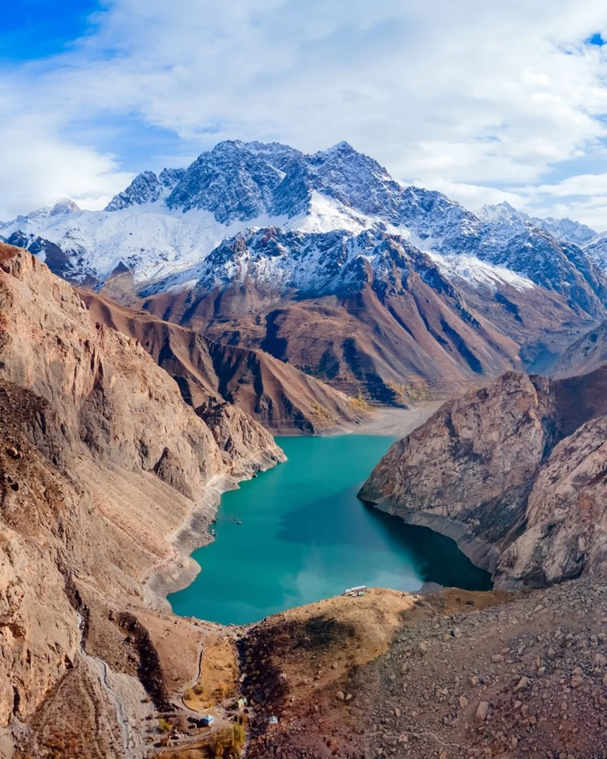

Локация и высота
Расположение: Средняя часть долины Шинг.
Высота: около 1771 м.
Высота указана ориентировочно, потому что в путеводителях и справочниках встречаются небольшие расхождения.
Seven Lakes by lake • Хушёр
Хушёр воспринимается как более суровый участок маршрута: вокруг больше камня, меньше мягких берегов и сильнее чувствуется рельеф Фанских гор.

У Хушёра долина становится суровее: вокруг больше камня, склонов и резких линий. Здесь особенно хорошо чувствуется переход от мягкого начала маршрута к более горной части Haft Kul.
Расположение: Средняя часть долины Шинг.
Высота: около 1771 м.
Высота указана ориентировочно, потому что в путеводителях и справочниках встречаются небольшие расхождения.
У Хушёра долина становится суровее: вокруг больше камня, склонов и резких линий. Здесь особенно хорошо чувствуется переход от мягкого начала маршрута к более горной части Haft Kul.
После Хушёра маршрут продолжается к Нофину, где озёра кажутся длиннее, а долина начинает раскрываться шире.
Эти советы помогут лучше понять озеро и удобнее спланировать всю поездку по Haft Kul.
После Хушёра маршрут продолжается к Нофину, где озёра кажутся длиннее, а долина начинает раскрываться шире.